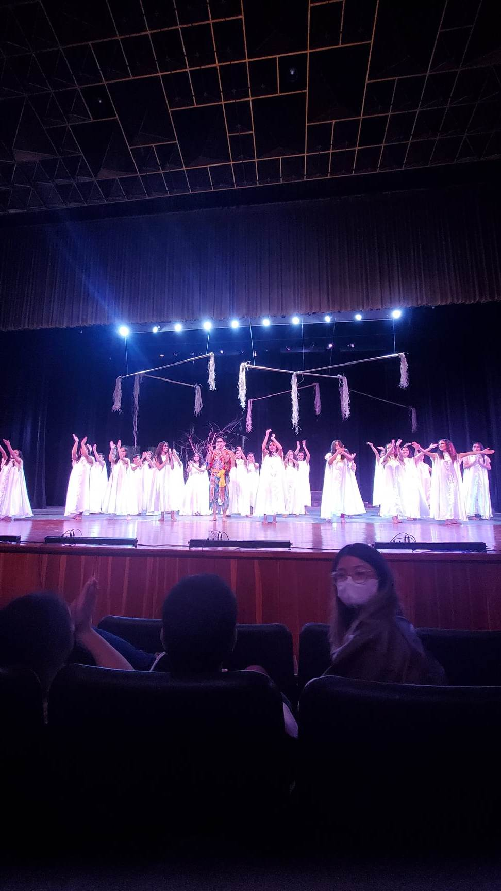
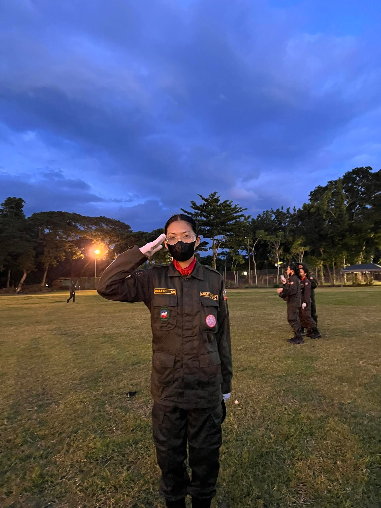
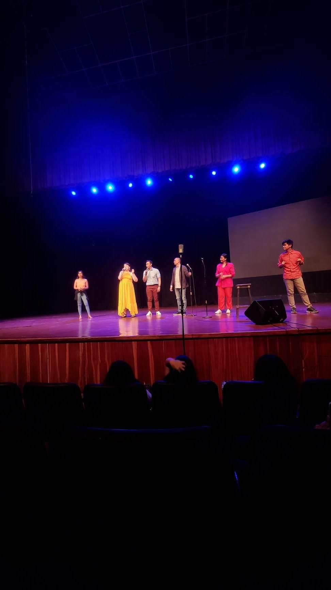
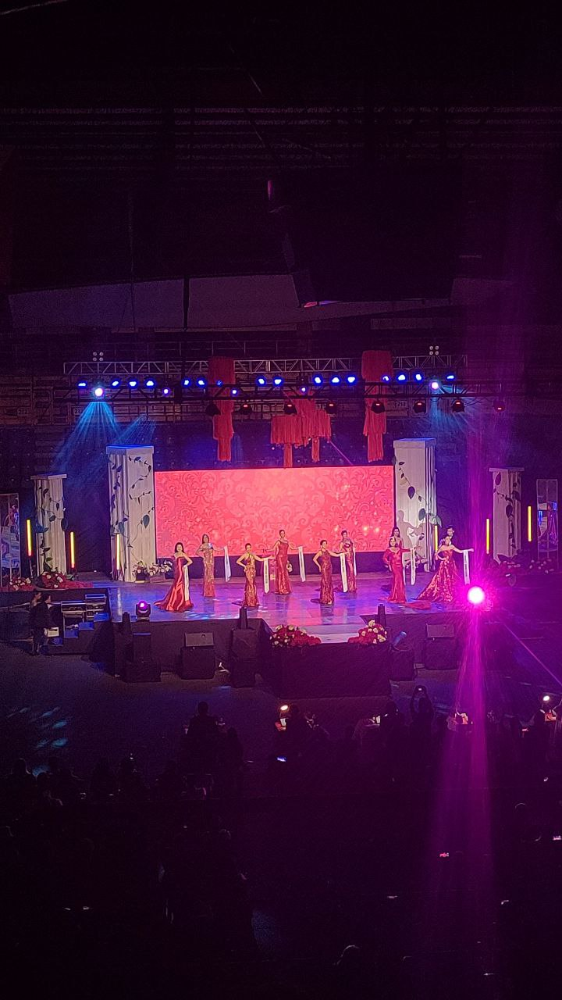

11/19/22(7:00pm)
Babaylan
Silliman University
Spectator
Babaylan's performance at Luce Auditorium was a powerful and captivating display
of talent, identity, and advocacy. The energy in the auditorium was electric as
the members of Babaylan took the stage, showcasing their diverse talents through
music, dance, spoken word, and theater.

12/03/22(7:00pm)
Jazz Christmas
Silliman University
Spectator
The Jazz Christmas concert at Luce Auditorium was a magical and enchanting
evening that transported the audience into a world of smooth melodies and
festive cheer. The stage was beautifully adorned with twinkling lights and
decorations, setting the perfect ambiance for a night filled with soulful
jazz renditions of beloved Christmas classics.

12/10/22(4:00pm))
Presentation Of Sponsors
Red Shield ROTC
Participant
The event served as a reminder of the power of collaboration and community support
in creating meaningful experiences for the cadets. It was a humbling experience to see
the sponsors being acknowledged and appreciated for their invaluable contributions.

09/10/22(7:00pm)
Bentebolous
Silliman University
Spectator
The energy in the auditorium was electric as the performers took the stage, captivating
the audience with their incredible dance moves, theatrical performances, and heartfelt
spoken word pieces.

08/26/22(8:00pm)
Miss Silliman Coronation Night
Silliman University
Spectator
The Miss Silliman Coronation Night at Luce Auditorium in Silliman University was a mesmerizing and
unforgettable evening that showcased the beauty, grace, and talent of the contestants. The stage was
transformed into a glamorous spectacle, adorned with sparkling lights and elegant decorations, setting
the perfect backdrop for the pageant.

08/17/22(4:00pm)
Miss Silliman Press launch
Silliman University
Spectator
The Miss Silliman Press Launch was an exciting and highly anticipated event that marked the
official beginning of the Miss Silliman pageant. The press launch provided a platform for
the contestants to introduce themselves and share their aspirations for the competition.

08/22/22(3:00pm)
Parada Sillimaniana
Silliman University
Participant
The Parada Sillimaniana in Silliman University was a vibrant and exhilarating event
that brought the entire community together in celebration of our university's rich
history and traditions. The streets were filled with colorful floats, lively music,
and enthusiastic spectators as various organizations and departments showcased their
creativity and pride.